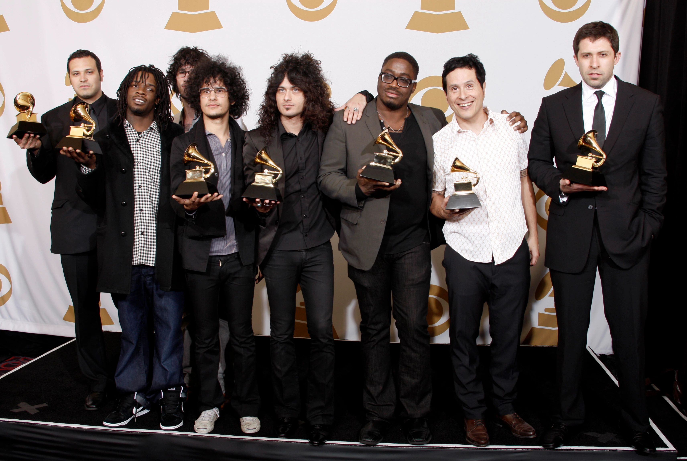
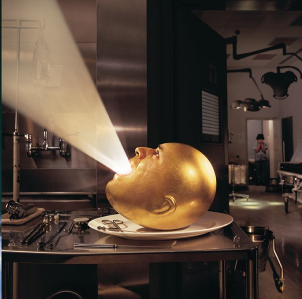
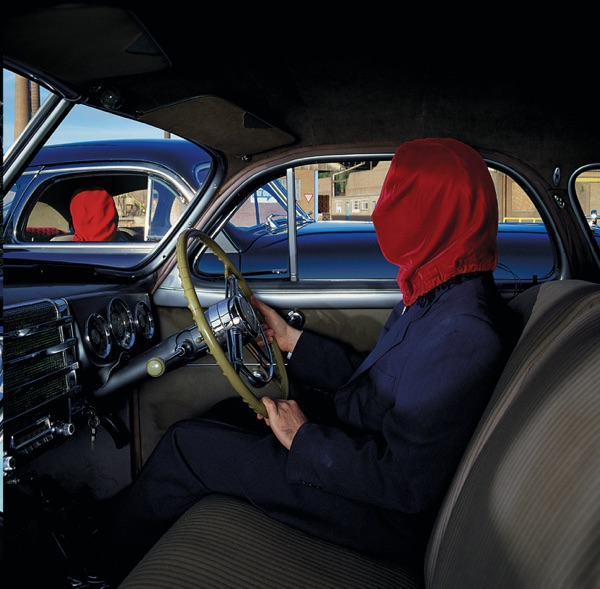
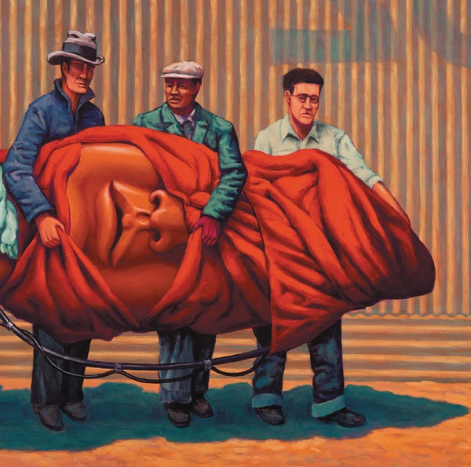
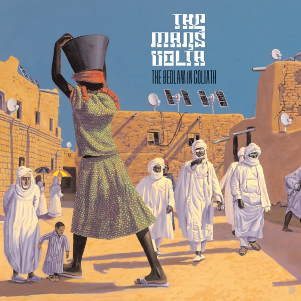

This is the go-to website for each true fan
of the greatest progressive rock band of the 21st century.

Their best albums.

Deloused in the Comatorium

Frances the Mute

Amputechture

The Bedlam in Goliath
What do critics say?
They have an ability to barge through all preconceived notions of taste and acceptability
by virtue of sheer kinetic energy and a maddening splurge of ideas.
Matt Evans, The Quietus
Mixing a huge variety of styles and sounds to a progressive punk rock and latin amibition,
The Mars Volta create passionate and inspired music, overflowing with atmosphere and emotion.
Jonathan Fieldhouse, Norman Records
Picking up the pieces from At the Drive-In, Cedric Bixler-Zavala and Omar Rodriguez-Lopez formed the Mars Volta and
immediately impressed with their willingness to eschew conventional logic and push themselves into
new artistic directions instead of opting for the more marketable sounds.
Matt Fink, AllMusic
Call to action! It's time!
Sign up for our product by clicking that button right over there!